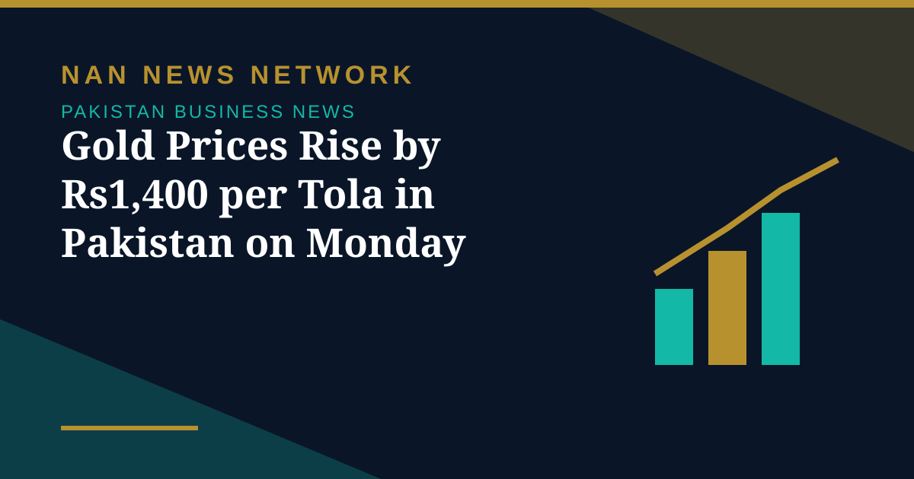
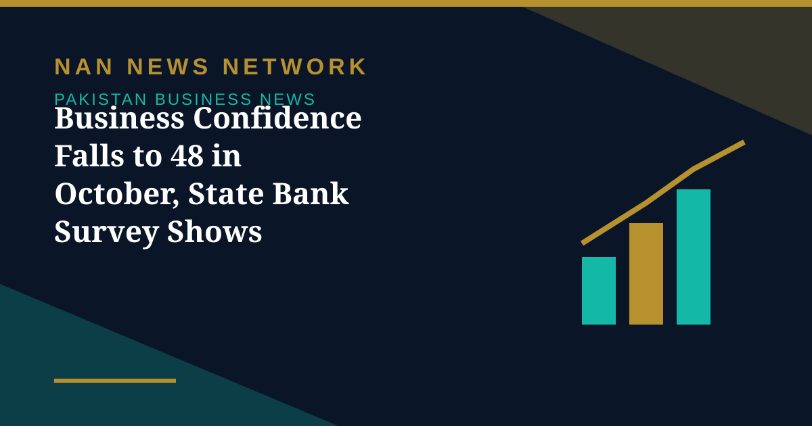
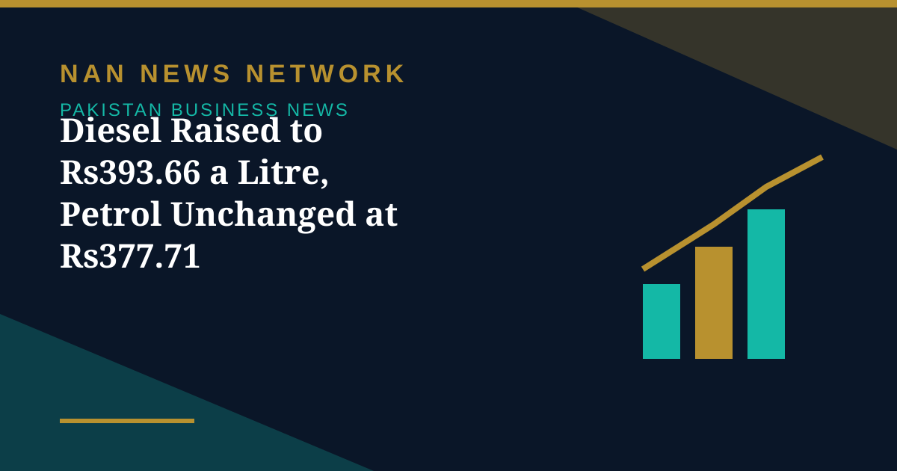
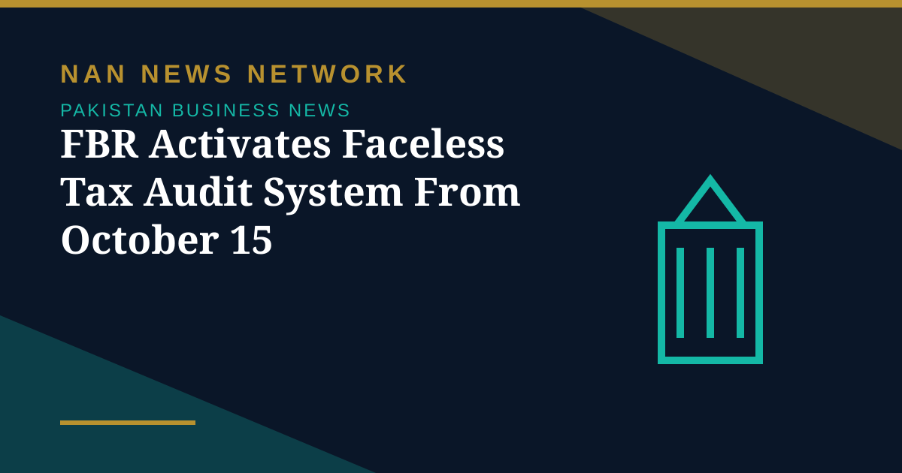
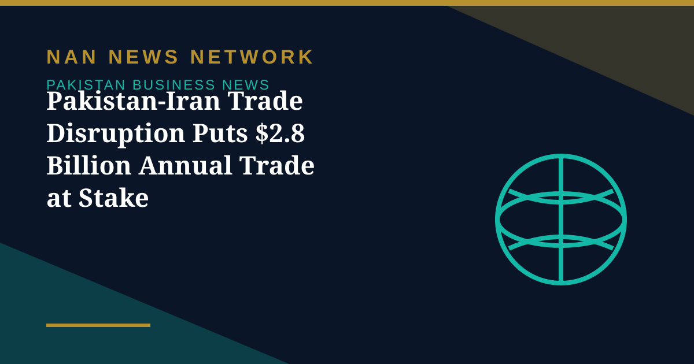

Markets
Gold Prices Rise by Rs1,400 per Tola in Pakistan on Monday
Gold prices edged higher in Pakistan on October 26, with 24-karat gold rising by Rs1,400 per tola to Rs423,436, according to market reports from Karachi.
Pakistan • Business
Prices, taxes and trade that affect every Pakistani.

Gold prices edged higher in Pakistan on October 26, with 24-karat gold rising by Rs1,400 per tola to Rs423,436, according to market reports from Karachi.
Gold prices edged higher in Pakistan on October 26, with 24-karat gold rising by Rs1,400 per tola to Rs423,436, according to market reports from Karachi.

Overall business confidence weakened further in October 2026, with the Business Confidence Index falling 1.1 points to 48, led by a decline in services sector sentiment, the State Bank's latest survey showed.

High-speed diesel rose Rs1.91 for October 24-26 while petrol held steady, as Brent crude climbed to $114.57 a barrel on Middle East supply concerns.

Designated income tax and sales tax cases now move through the National Faceless Centre, with audit, assessment and quality control handled by separate officers and all filings electronic via IRIS.

With border crossings closed since October 17, the LPG halt is only the most visible part of a much larger trade relationship — including about $684 million of Pakistani exports.